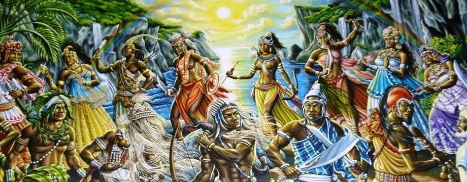

O que é Umbanda?
Umbanda é a integração entre passado e futuro, natureza e atitude. É a união da sabedoria de um
povo
e a história contada em outros ângulos.
Umbanda é resgate da anscestralidade, ativação do “eu originário” perdido em meio aos seus
Karmas
através da conexão com povos e seres que fizeram parte da construção social atual.
Umbanda tem sua raiz nos pretos-velhos (um dia escravos), nos caboclos (indígenas dizimados),
nos
exus (senhores feudais, Reis e líderes religiosos) e nos erês (poder criativo da criança que
permite
o acesso a outros planos pela sua pureza ainda não poluída).
Umbanda é caridade. É o bem sem olhar a quem. É a casa de todos que, com suas portas abertas,
cultua
a vida e a harmonia entre os seres vivos.
Umbanda é patrimônio brasileiro, é humildade, é livre, artística e dinâmica.
Umbanda ama os animais, não faz sacrifícios, não cobra nada.
Umbanda não tem sacerdote, não tem livro sagrado, não tem culto padronizado.
Umbanda tem Pai de Santo, que como uma pessoa da família cuida de seus filhos e zela pela voz
dos
guias. Umbanda tem corrente que, de mãos dadas, pessoas firmam um pacto de amor. Umbanda é
livre.
Quem decide como desenhar seu ritual é o espírito que conduz aquela casa.
O livro da Umbanda deveria ser a história do Brasil. Porém, a Umbanda vem justamente para dizer
pela
voz de quem viveu essa história que esses livros mentem. A Umbanda é escrita dia a dia, conforme
a
vida solicita e seus seguidores aprimoram seus ouvidos, pois aqui sabedoria é para usar e não
para
pendurar na parede.
Seja bem vindo à Umbanda. Seguindo esse roteiro, encontrará a magia que você precisa para
acessar
sua espiritualidade e refinar seus passos e atitudes nessa encarnação onde se faz tão necessária
a
mudança da forma do humano pensar e agir.
Texto: Mãe Alice de Ogum
Seja bem-vindo a este refúgio de luz e paz.
E Orixás?
Existem diversas formas de cultuar os Orixas dentro da diversidade da Umbanda. Aqui seguimos o fundamento onde consideramos os 7 Orixás principais, Oxalá, Ogum, Iemanjá, Oxóssi, Oxum, Xangô e Iansã, e os codificamos como linhas cósmicas vibratórias contendo energias que vibram em nossos campos sutis manifestados através de cada um dos 7 chakras (vortices de energia que define a frequência de um campo energético). Sim, podemos ver essas frequências como Deidades, santos, porém aqui no Asas buscamos compreender através da essência e manifestação, e não da personificação. Aqui não incorporamos Orixás, mas entidades subdivididas em 3 estados vibratórios (erê, caboclo e preto-velho) que trazem os saberes adquiridos em suas vidas manifestos dentro das características de cada orixá.

Cultuamos também o Orixá Exu dentro de uma linha específica chamada quimbanda ou esquerda, que é
uma
linha onde as entidades que a representam não se encontram em dimensões elevadas mas ficam aqui
perto de nós na parte mais baixa de Aruanda nos ajudando com ações do dia a dia. Esses espíritos
quando encarnados tiveram atitudes significativas na formação do karma da Humanidade optando em
seguir mesmo depois de desencadeados atuando aqui na vida da Terra. Apenas os Exus podem
transformar
a matéria e alterar o fluxo das coisas, pois sabem depois recolocar tudo novamente sem alterar
os
códigos da evolução.
Texto: Mãe Alice de Ogum